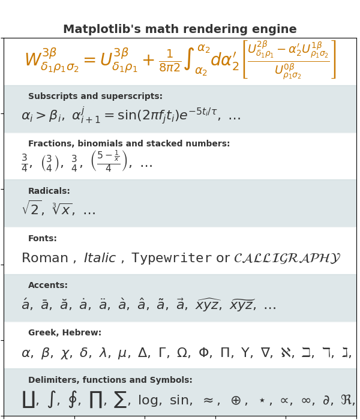

Note
Click here to download the full example code
Mathtext Examples¶
Selected features of Matplotlib's math rendering engine.
Out:
0 $W^{3\beta}_{\delta_1 \rho_1 \sigma_2} = U^{3\beta}_{\delta_1 \rho_1} + \frac{1}{8 \pi 2} \int^{\alpha_2}_{\alpha_2} d \alpha^\prime_2 \left[\frac{ U^{2\beta}_{\delta_1 \rho_1} - \alpha^\prime_2U^{1\beta}_{\rho_1 \sigma_2} }{U^{0\beta}_{\rho_1 \sigma_2}}\right]$
1 $\alpha_i > \beta_i,\ \alpha_{i+1}^j = {\rm sin}(2\pi f_j t_i) e^{-5 t_i/\tau},\ \ldots$
2 $\frac{3}{4},\ \binom{3}{4},\ \genfrac{}{}{0}{}{3}{4},\ \left(\frac{5 - \frac{1}{x}}{4}\right),\ \ldots$
3 $\sqrt{2},\ \sqrt[3]{x},\ \ldots$
4 $\mathrm{Roman}\ , \ \mathit{Italic}\ , \ \mathtt{Typewriter} \ \mathrm{or}\ \mathcal{CALLIGRAPHY}$
5 $\acute a,\ \bar a,\ \breve a,\ \dot a,\ \ddot a, \ \grave a, \ \hat a,\ \tilde a,\ \vec a,\ \widehat{xyz},\ \widetilde{xyz},\ \ldots$
6 $\alpha,\ \beta,\ \chi,\ \delta,\ \lambda,\ \mu,\ \Delta,\ \Gamma,\ \Omega,\ \Phi,\ \Pi,\ \Upsilon,\ \nabla,\ \aleph,\ \beth,\ \daleth,\ \gimel,\ \ldots$
7 $\coprod,\ \int,\ \oint,\ \prod,\ \sum,\ \log,\ \sin,\ \approx,\ \oplus,\ \star,\ \varpropto,\ \infty,\ \partial,\ \Re,\ \leftrightsquigarrow, \ \ldots$
import matplotlib.pyplot as plt
import subprocess
import sys
import re
# Selection of features following "Writing mathematical expressions" tutorial
mathtext_titles = {
0: "Header demo",
1: "Subscripts and superscripts",
2: "Fractions, binomials and stacked numbers",
3: "Radicals",
4: "Fonts",
5: "Accents",
6: "Greek, Hebrew",
7: "Delimiters, functions and Symbols"}
n_lines = len(mathtext_titles)
# Randomly picked examples
mathext_demos = {
0: r"$W^{3\beta}_{\delta_1 \rho_1 \sigma_2} = "
r"U^{3\beta}_{\delta_1 \rho_1} + \frac{1}{8 \pi 2} "
r"\int^{\alpha_2}_{\alpha_2} d \alpha^\prime_2 \left[\frac{ "
r"U^{2\beta}_{\delta_1 \rho_1} - \alpha^\prime_2U^{1\beta}_"
r"{\rho_1 \sigma_2} }{U^{0\beta}_{\rho_1 \sigma_2}}\right]$",
1: r"$\alpha_i > \beta_i,\ "
r"\alpha_{i+1}^j = {\rm sin}(2\pi f_j t_i) e^{-5 t_i/\tau},\ "
r"\ldots$",
2: r"$\frac{3}{4},\ \binom{3}{4},\ \genfrac{}{}{0}{}{3}{4},\ "
r"\left(\frac{5 - \frac{1}{x}}{4}\right),\ \ldots$",
3: r"$\sqrt{2},\ \sqrt[3]{x},\ \ldots$",
4: r"$\mathrm{Roman}\ , \ \mathit{Italic}\ , \ \mathtt{Typewriter} \ "
r"\mathrm{or}\ \mathcal{CALLIGRAPHY}$",
5: r"$\acute a,\ \bar a,\ \breve a,\ \dot a,\ \ddot a, \ \grave a, \ "
r"\hat a,\ \tilde a,\ \vec a,\ \widehat{xyz},\ \widetilde{xyz},\ "
r"\ldots$",
6: r"$\alpha,\ \beta,\ \chi,\ \delta,\ \lambda,\ \mu,\ "
r"\Delta,\ \Gamma,\ \Omega,\ \Phi,\ \Pi,\ \Upsilon,\ \nabla,\ "
r"\aleph,\ \beth,\ \daleth,\ \gimel,\ \ldots$",
7: r"$\coprod,\ \int,\ \oint,\ \prod,\ \sum,\ "
r"\log,\ \sin,\ \approx,\ \oplus,\ \star,\ \varpropto,\ "
r"\infty,\ \partial,\ \Re,\ \leftrightsquigarrow, \ \ldots$"}
def doall():
# Colors used in Matplotlib online documentation.
mpl_blue_rvb = (191. / 255., 209. / 256., 212. / 255.)
mpl_orange_rvb = (202. / 255., 121. / 256., 0. / 255.)
mpl_grey_rvb = (51. / 255., 51. / 255., 51. / 255.)
# Creating figure and axis.
plt.figure(figsize=(6, 7))
plt.axes([0.01, 0.01, 0.98, 0.90], facecolor="white", frameon=True)
plt.gca().set_xlim(0., 1.)
plt.gca().set_ylim(0., 1.)
plt.gca().set_title("Matplotlib's math rendering engine",
color=mpl_grey_rvb, fontsize=14, weight='bold')
plt.gca().set_xticklabels("", visible=False)
plt.gca().set_yticklabels("", visible=False)
# Gap between lines in axes coords
line_axesfrac = 1 / n_lines
# Plotting header demonstration formula
full_demo = mathext_demos[0]
plt.annotate(full_demo,
xy=(0.5, 1. - 0.59 * line_axesfrac),
color=mpl_orange_rvb, ha='center', fontsize=20)
# Plotting features demonstration formulae
for i_line in range(1, n_lines):
baseline = 1 - i_line * line_axesfrac
baseline_next = baseline - line_axesfrac
title = mathtext_titles[i_line] + ":"
fill_color = ['white', mpl_blue_rvb][i_line % 2]
plt.fill_between([0., 1.], [baseline, baseline],
[baseline_next, baseline_next],
color=fill_color, alpha=0.5)
plt.annotate(title,
xy=(0.07, baseline - 0.3 * line_axesfrac),
color=mpl_grey_rvb, weight='bold')
demo = mathext_demos[i_line]
plt.annotate(demo,
xy=(0.05, baseline - 0.75 * line_axesfrac),
color=mpl_grey_rvb, fontsize=16)
for i in range(n_lines):
s = mathext_demos[i]
print(i, s)
plt.show()
if '--latex' in sys.argv:
# Run: python mathtext_examples.py --latex
# Need amsmath and amssymb packages.
fd = open("mathtext_examples.ltx", "w")
fd.write("\\documentclass{article}\n")
fd.write("\\usepackage{amsmath, amssymb}\n")
fd.write("\\begin{document}\n")
fd.write("\\begin{enumerate}\n")
for i in range(n_lines):
s = mathext_demos[i]
s = re.sub(r"(?<!\\)\$", "$$", s)
fd.write("\\item %s\n" % s)
fd.write("\\end{enumerate}\n")
fd.write("\\end{document}\n")
fd.close()
subprocess.call(["pdflatex", "mathtext_examples.ltx"])
else:
doall()
Keywords: matplotlib code example, codex, python plot, pyplot Gallery generated by Sphinx-Gallery